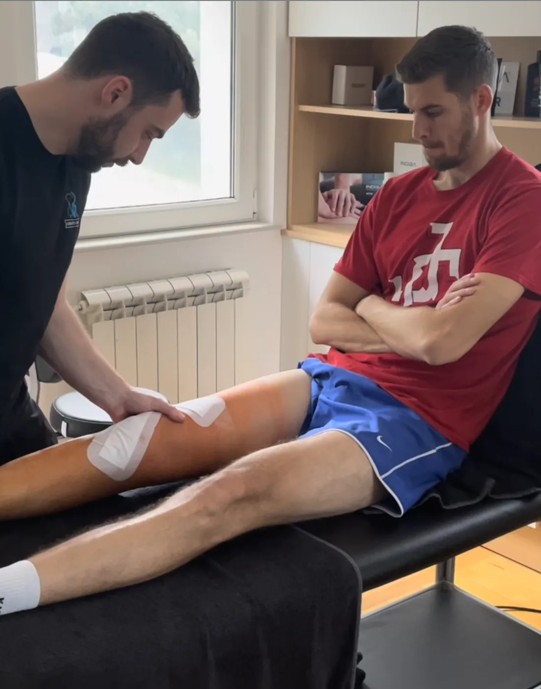

ACL · PREDNJI UKRŠTENI LIGAMENT
Pokidao si prednji ukršteni ligament?
Evo kako izgleda put od ACL povrede do povratka na teren i šta moraš da uradiš da ne prepustiš oporavak slučaju.
300+ oporavljenih ACL povreda
…i saznaj u kakvom je stanju tvoje koleno i kako treba da izgleda sledeći korak rehabilitacije.
Kome je ovo namenjeno NACRT
Bilo da si se povredio juče ili si operisan pre godinu dana, oporavak ima svoj redosled. Ova stranica je za tebe ako:
- Povreda je svežaKoleno ti je otišlo u stranu, oteklo je i boli. Pre bilo koje odluke treba da znaš šta je povređeno i u kakvom je stanju.
- Operacija tek predstojiAko u operaciju uđeš sa punim pokretom i jačim mišićima, lakše se vraćaš posle nje. Priprema počinje pre zahvata.
- Operisan si i krećeš sa oporavkomRehabilitacija počinje odmah posle zahvata, po protokolu i uputstvu tvog hirurga.
- Oporavak je stao na polaHodaš normalno, ali trčanje, skok ili nagla promena pravca i dalje ne idu. Najčešće neka faza oporavka nije završena do kraja.
Zašto operacija sama po sebi nije kraj problema NACRT
Operacijom se ligament rekonstruiše: dobijaš novi. Ali operacija ne vraća snagu, kontrolu ni sigurnost u sopstveno koleno.
Posle povrede i operacije mišići oko kolena oslabe, najviše prednja strana buta. Noga se odvikne od doskoka i nagle promene pravca, a novom ligamentu treba vreme da podnese opterećenje. Sve to se vraća radom, korak po korak.
Operacija je početak oporavka, ne njegov kraj.
Šta se dešava tokom rehabilitacije NACRT
Oporavak ide u fazama i svaka ima svoj cilj. U sledeću se prelazi kad su ispunjeni kriterijumi, ne kad prođe određen broj nedelja.

Faza 1: smiriti koleno i vratiti pun pokret
Smiruje se otok, koleno ponovo može potpuno da se opruži i savije, a mišić prednje strane buta ponovo počinje da radi. Štake odlažeš kad to dozvoli tvoj hirurg.
Faza 2: snaga i kontrola
Opterećenje raste postepeno: čučanj, iskorak, vežbe na jednoj nozi, ravnoteža. Cilj je da operisana noga sustigne zdravu, i po snazi i po kontroli.
Faza 3: trčanje, skok i doskok
Kad snaga i kontrola to dozvole, uvode se trčanje, skokovi i doskoci, pa nagle promene pravca. Ovde vežbaš baš ono pri čemu si se povredio.
Faza 4: povratak na teren
Trening specifičan za tvoj sport i poziciju, sve bliže pravoj utakmici. Na teren se vraća kad to pokažu testovi, ne kad prođe određen broj meseci.
Zašto nije dovoljno „više me ne boli“ NACRT
Bol nestane mnogo pre nego što se vrate snaga i kontrola. To što te koleno ne boli dok hodaš ne znači da si spreman za sprint, doskok ili naglu promenu pravca.
Razlika između operisane i zdrave noge često se ne oseća, ali se izmeri. A prerani povratak je jedan od najčešćih razloga za novu povredu.
Zato se o povratku odlučuje po merenju, ne po osećaju.
Kako Lokomoto prati napredak NACRT
Na prvom pregledu mere se obim pokreta, snaga i stabilnost kolena, uvek u poređenju sa zdravom nogom. Ista merenja ponavljaju se tokom oporavka.
Rezultati se zapisuju, jer su oni jedini dokaz da se stanje menja, i po njima se odlučuje kada se prelazi u sledeću fazu. Program usklađujemo sa protokolom tvog hirurga, a kad nešto treba promeniti, prvo se konsultujemo s njim.
Naslov dokaza iz copyja
Konkretan ACL slučaj: ko, šta, kada se vratio na teren — samo stvaran slučaj, uz pristanak pacijenta. MATERIJAL OD KLIJENTA
Naslov iz copyja
Snimci sportista koji su prošli ACL oporavak u Lokomotu. MATERIJAL OD KLIJENTA
Šta se dešava na prvom pregledu NACRT
Ponesi otpusnu listu, nalaze i snimke ako ih imaš, i šorc. Pregled uključuje pokret, ne samo ležanje na stolu.
- RazgovorKako se povreda desila, šta je do sada urađeno, šta te sada ograničava i gde hoćeš da se vratiš.
- TestiranjeObim pokreta, snaga i stabilnost kolena, u poređenju sa zdravom nogom.
- PlanSaznaješ u kakvom je stanju tvoje koleno, u kojoj si fazi oporavka i kako izgleda sledeći korak.
Ne prepuštaj oporavak slučaju.
…i saznaj u kakvom je stanju tvoje koleno i kako treba da izgleda sledeći korak rehabilitacije.